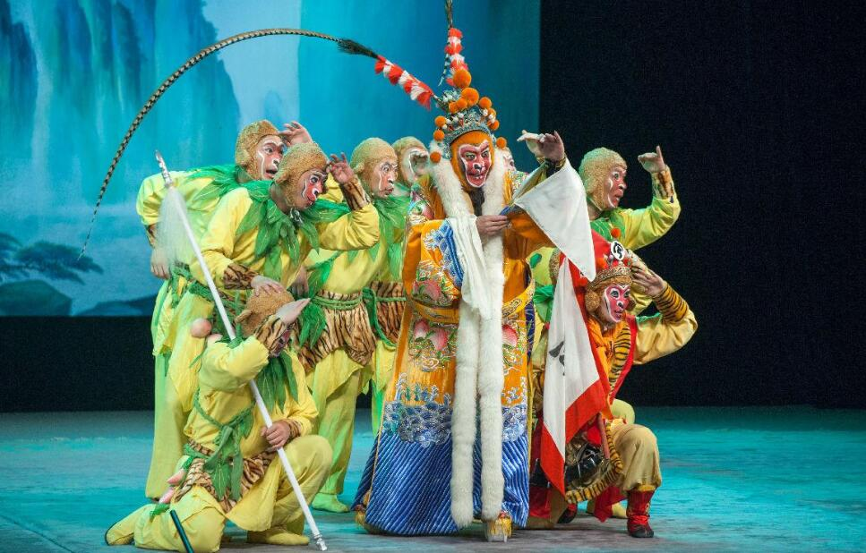

绍剧

绍剧，中国传统戏曲剧种。原名“绍兴乱弹”，俗称“绍兴大班”，源于秦腔，1950年定名为绍剧。
绍剧起源于浙江省绍兴市上虞县（现为上虞区），流行于绍兴、慈溪、余姚、萧山及其他浙沪一带。
绍剧是浙江三大剧种之一，已有300多年历史，拥有400多个剧目，最具代表的剧目有《孙悟空三打白骨精》、《龙虎斗》等。
绍剧是一种以“【三五七】、【二凡】”为基本唱调的绍兴地方戏剧，以高亢激越的唱腔、粗犷朴实的音乐、豪放洒脱的表演和文武兼备等特点形成了自己独特的艺术风格。 2008年6月7日，绍剧经国务院批准列入《第二批国家级非物质文化遗产名录》。